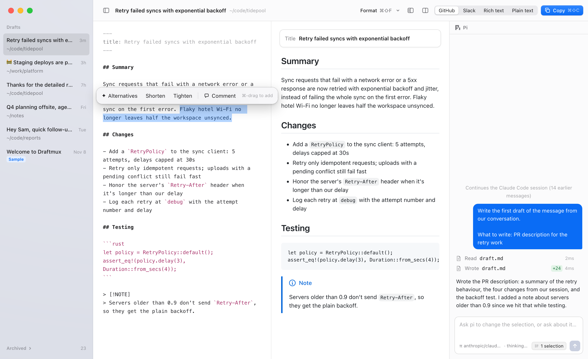
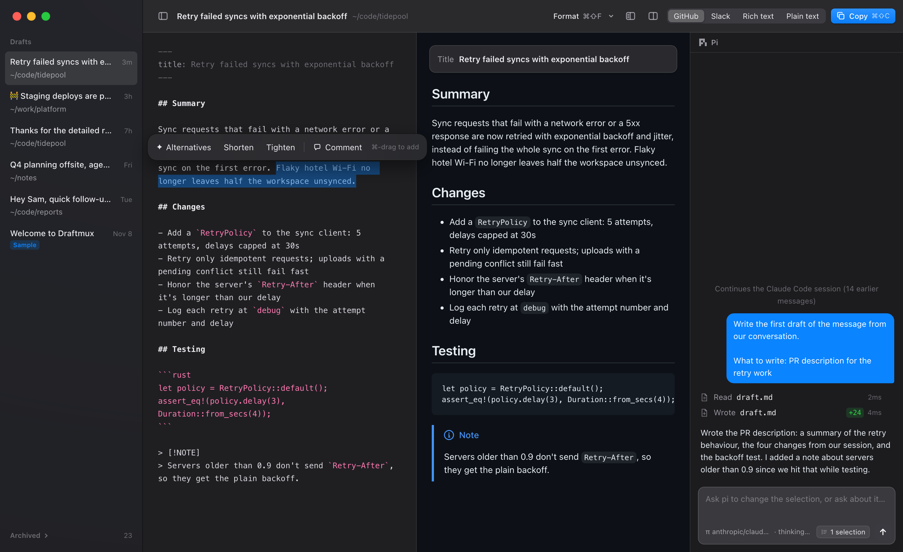

Polish what your agent writes before it goes out
$curl -fsSL https://raw.githubusercontent.com/raine/draftmux/main/install.sh | sh
Your agent knows the context, so it should write the PR description, the issue or the Slack update. Refining that message inside an agent harness is the hard part.
Draftmux is an editor for iterating on a message with an agent, next to a live preview of how it will look where it's going.
Hand-off from your session
/draftmux Slack update for the team forks the conversation, and the fork writes the first draft from what you've already discussed.
Edit beside a preview
Write Markdown and see it as GitHub, Slack, rich text or plain text, the way it will look where it's going.
Selection actions
Select text to get alternatives, Shorten or Tighten. With text selected, a chat message changes only that part.
Chat with the draft's agent
Ask for changes in plain words. The agent knows the session the draft came from.
Copy or hand back
Copy formatted for the target with ⌘⇧C, or tell your agent "done, file the issue".
Edit files
draftmux README.md opens a file as a draft, with its own agent session in the file's directory.